Афган, без вести пропавшие
Интервью Евгения Барханова корреспонденту Russia Today
После вывода советских войск из Афганистана прошло более 30 лет, но пропавшими без вести до сих пор числятся 264 участника этой кампании.
Некоторые из них живы и после десятилетий плена всё ещё хотят вернуться домой. В рамках проекта «Незабытые истории» RT поговорил с режиссёром-документалистом Евгением Бархановым о том, кто и как продолжает искать пропавших солдат. В ходе работы над своим фильмом «Ташакор» он вместе с другими поисковиками добыл новые уникальные свидетельства пребывания советских солдат во вражеском плену. Благодаря им, возможно, удастся отыскать неизвестные места захоронения десятков военнослужащих и добраться до оставшихся в живых. Кроме того, совсем недавно поисковикам удалось выяснить неизвестные подробности двух массовых побегов советских солдат из плена в 1986 году, о которых до сих пор даже специалистам не известно практически ничего.
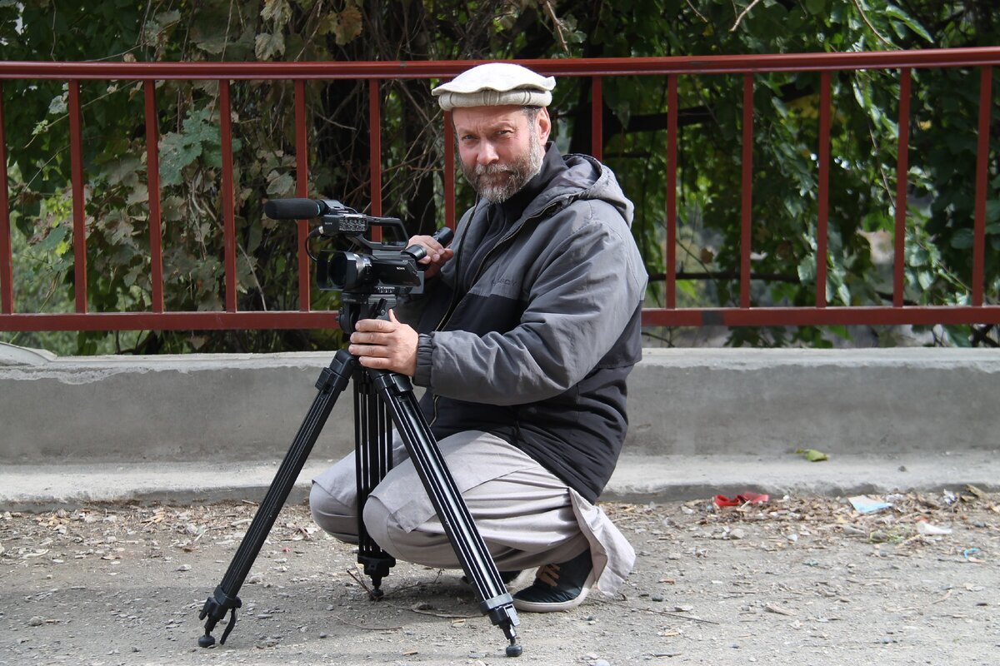Евгений Барханов. Пакистан
— Евгений Евгеньевич, почему вы, киношник, так плотно занимаетесь темой пропавших без вести в Афганистане?
— Я сам служил в 56-й ДШБ (десантно-штурмовая бригада. — RT), суммарно провёл в Афганистане порядка десяти месяцев, получил статус инвалида. У меня здесь не только профессиональный интерес как режиссёра, но и своя личная история. Можно сказать, до сих пор несу груз вины по поводу пропажи без вести одного из сослуживцев. Всё ещё считаю, что тогда в моих силах было предотвратить его уход из части.
Сейчас мы дружим и тесно сотрудничаем с Александром Лаврентьевым, руководителем рабочей группы по Афганистану в Межведомственной комиссии по военнопленным, интернированным и пропавшим без вести. Это сейчас единственная структура, которая занимается поиском пропавших в ходе той войны. Лаврентьев — абсолютно уникальный человек, который всего себя посвятил этой теме и много лет занимается ей, хотя сам, будучи офицером ракетных войск, в Афганистане даже не служил.
— Какой статус у этой структуры?
— Она формально учреждена президентом РФ, но по факту не имеет ни финансирования, ничего. Грубо говоря, она существует на бумаге с указанными фамилиями и должностями. Поэтому последние годы вся практическая поисковая работа в Афганистане держится лично на Лаврентьеве и ещё нескольких таких же энтузиастах.
Вы, наверное, слышали, что в прошлом году в ходе очередной поездки в Афганистан Александр Владимирович попал в плен к движению «Талибан»*, и то, что спустя месяц его удалось оттуда вызволить живым и почти здоровым, — настоящее чудо.
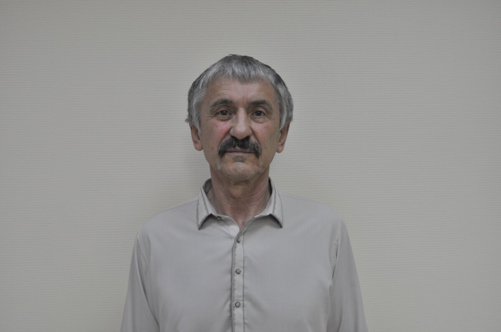
Александр Лаврентьев. Первые минуты свободы
— Напомните, сколько человек пропало без вести Афганистане и скольких удалось отыскать? В интернете гуляют самые разные цифры.
— Сейчас неизвестна судьба 264 человек. О них либо нет вообще никакой информации, либо она не подтверждена. На момент вывода наших войск в 1989 году в этом списке было 311 фамилий.
— Получается, за 30 лет прояснилась судьба лишь 47 человек.
— У комиссии были разные периоды, в том числе — когда поиски фактически не велись. После того как нам дали грант Минкультуры РФ на создание «Ташакора», они получили новый импульс. Удалось организовать несколько содержательных экспедиций, которые дали возможность сделать очень хороший задел. Но на сами поиски Лаврентьев вынужден искать средства самостоятельно, и это очень тормозит процесс.
— C чем связаны основные расходы в поездках и как эти средства удаётся добывать?
— Помимо авиабилетов, бензина, нужно оплачивать услуги переводчика, охраны, информаторов. Но даже если мы в конце концов находим останки наших ребят, то за косточки афганцы тоже требуют деньги. Часто называются не совсем адекватные суммы, но всегда можно сторговаться.
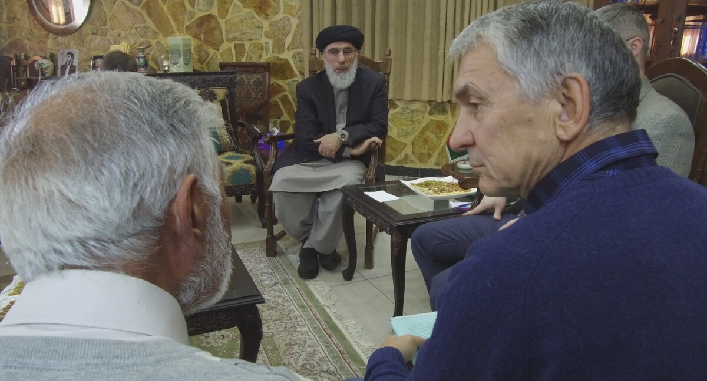
Гульбеддин Хекматияр. Александр Лаврентьев. Переговоры.
Увы, прошли времена, когда Руслан Аушев, возглавляя Комитет по делам воинов-интернационалистов, находил серьёзных спонсоров. Он и генерал-полковник Валерий Востротин, который сейчас возглавляет Межведомственную комиссию по военнопленным, интернированным и пропавшим без вести, — единственные два человека (кстати, оба удостоены за свою службу в Афганистане звания Героев Советского Союза), которых эта тема по-настоящему волновала и тогда, и сейчас.
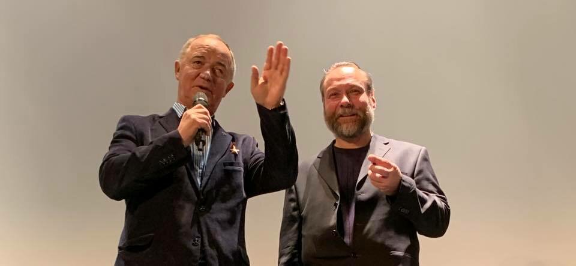Герой Советского Союза генерал-полковник Валерий Востротин. Режиссёр фильма "Ташакор" Евгений Барханов
Поэтому в данный момент всё держится в основном на частных пожертвованиях. Помогают те, кто сам прошёл Афганистан, и ещё довольно много женщин. Может быть, прозвучит пафосно, но это русские женщины самых разных возрастов, которых эта война тоже затронула. Бывают суммы совсем небольшие, порой пенсионеры по 50 рублей присылают. В этот момент Александру Владимировичу ужасно горько и особенно неловко, что приходится принимать эти деньги.
— Слышал, существует база данных родных всех пропавших без вести, чтобы при обнаружении останков было легче опознать кого-то.
— Да, но некоторые родственники по неясным причинам отказались предоставить материал, а у кого-то из пропавших уже просто не осталось родных, поэтому эта база неполная. Но даже с ней работа по идентификации очень сложна — по ряду причин не всегда из найденных останков удаётся выделить ДНК, а иногда анализ показывает, что это совсем не тот человек, останки которого, как мы полагаем, мы обнаружили. В этом случае или ищем дополнительные фрагменты костей, или оставляем то, что есть, на хранение в надежде на появление более современных технологий.
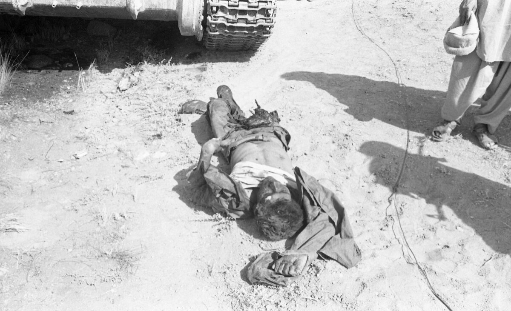
— Меня потрясла история Ил-76 с витебскими десантниками, который разбился недалеко от Кабула в первые часы операции в Афганистане, 25 декабря 1979 года. Тогда высоко в горах погибли около 50 человек. Альпинистам с огромным трудом удалось найти оторвавшуюся кабину, достать тела лётчиков и портфель с секретными документами. А фюзеляж упал в труднодоступное ущелье, подобраться к которому возможности тогда не было. И после окончания спасательной операции об этой трагедии почему-то все забыли. Их признали погибшими, семьи получили льготы, но никто даже не пытался отыскать тела. Лишь в 2005 году афганцы смогли туда добраться, сделать фотографии и передать их в Комитет по делам воинов-интернационалистов. Общественники за счёт спонсоров организовали скромную экспедицию, нашли в итоге то самое место, но сесть на вертолёте не смогли и осмотрели его только с воздуха. То есть спустя 40 лет после трагедии до останков десятков наших солдат, которые лежат не где-то на другом конце земли или на океанском дне, а в конкретном месте, так никто и не добрался. Как же так?
— Всё снова упирается в деньги, а в случае с этим Ил-76 их нужно очень много. Потому что такая поисковая операция — это серьёзный риск, и если государство возьмёт на себя за неё ответственность, то нужно и безопасность обеспечить, то есть задействовать самые разные структуры. А вдруг что-то случится? Отвечать никто не хочет. Мы, когда едем в Афганистан, то просто ставим в известность дипломатов. По большому счёту мы для них только головная боль, искатели приключений со всем вытекающим отношением. По-хорошему, должна быть отдельная госструктура со штатом, финансированием и соответствующими возможностями. Но её нет.
«Эта тема до сих пор волнует множество людей»
— Ваша полуторачасовая документальная лента «Ташакор» («Спасибо» на языке дари. — RT) вызвала огромный интерес у зрителей. Там есть новые сенсационные данные, о которых мы ещё поговорим, но почему сейчас её нигде нельзя посмотреть?
— Мы рассчитываем на продолжение съёмок не только документального, но и художественного фильма, а для этого нам нужны участия в кинофестивалях и номинации. С фильмом нас уже обещали поддержать Минобороны и наше посольство в Кабуле, но для получения финансирования на него в Минкульте это тоже важная составляющая. Чтобы фильм отобрали на фестиваль, он не должен находиться в открытом доступе. Мы подали много заявок, но из-за коронавируса всё это пока отложилось. Осенью я обязательно выложу фильм в открытый доступ, чтобы его посмотрели как можно больше людей.
— В одном из фестивалей, как я понял, уже поучаствовали.
— Да, после премьеры в декабре 2019 года было несколько закрытых показов, в основном для ветеранов, весной появилась возможность провести онлайн-показ в рамках фестиваля «Свидание с Россией». И мы с удивительной для меня лёгкостью там всех опередили. Если в среднем картины смотрели онлайн 20—30 тыс. человек, то нашу почти 200 тыс., причём буквально по всему миру. Я был в лёгком шоке, когда узнал, что только в Австралии его посмотрело несколько тысяч человек, притом что фильм был доступен в строго определённое время лишь на полтора часа. После показа мне пришло около сотни писем со всего мира, оказалось, что эта тема до сих пор волнует множество людей.
«Пантелюк и ещё пять человек попросили помочь вернуться на родину»
— Основной сюжет «Ташакора» — поиски следов пропавшего без вести в 1987 году советского лётчика Сергея Пантелюка. Два года назад российские СМИ наперебой сообщали, что спустя 30 лет в Афганистане нашёлся без вести пропавший советский лётчик, который хотел бы вернуться домой. Данных было немного, но фамилия Пантелюка тогда звучала. Однако потом эта тема, получившая огромный резонанс, как-то сошла на нет. Наверняка вам известна вся подоплёка той истории.
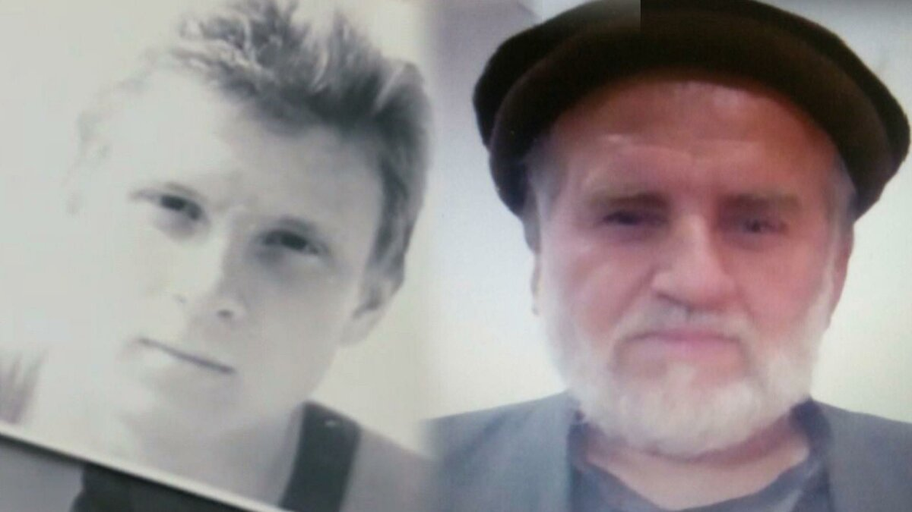
— Да. Наши спецслужбы через посредника несколько лет назад получили записку на русском языке и фотографию человека, который представился Сергеем Пантелюком. Он просил помочь ему и ещё пяти нашим пропавшим без вести военнослужащим вернуться на родину.
— Вы вместе с Александром Лаврентьевым отправились в Пакистан, чтобы попытаться найти его?
— Да, там мы должны были встретиться с посредником, от которого исходила информация. Но когда мы приехали, выяснилось, что посредник оказался в тюрьме, и встретиться с ним не удалось. И хотя сам контакт был не слишком надёжным, были веские основания полагать, что этот лётчик жив. Мы провели экспертизу, которая показала: с очень большой долей вероятности, на фото Сергей Пантелюк. Лично я в этом уверен. Что касается дальнейших перспектив, то работа по его поиску продолжается.
— Есть ли понимание, где он может находиться сейчас и каково его положение? Если где-то есть группа наших пленных, то почему сейчас, когда война давно закончена, они не могут самостоятельно куда-то приехать и попросить о помощи?
— На территории Пакистана было несколько значительных лагерей для перемещённых лиц, беженцев из Афганистана. Они располагались в основном вокруг Пешавара. Мы почти уверены, что записка была из лагеря Шамшату. В 1980-е там находились до 50 тысяч человек. Сейчас меньше, но несколько ступеней охраны осталось, поэтому, если человека там удерживают, то добраться до него крайне сложно. Просто так туда не попасть, и у нас это тоже не получилось. А что мешает им самим покинуть территорию, однозначно сказать трудно.
— В ходе работы над фильмом вам удалось взять интервью у лидера Исламской партии Афганистана (ИПА) Гульбеддина Хекматияра, одного из самых крупных и в то же время радикализированных полевых командиров времён советско-афганской войны.
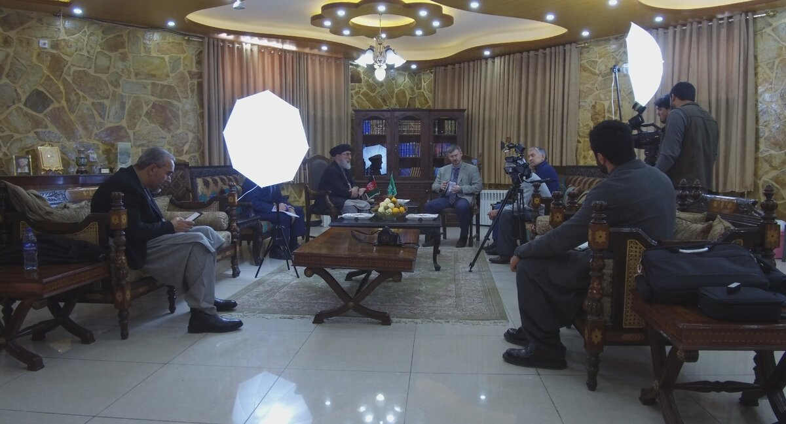
— Да, до этого он никогда не общался с российскими СМИ, игнорировал их принципиально. Это один из самых влиятельных людей в стране, который с 2003 года почти 15 лет был в «чёрном списке» террористов ООН наравне с Усамой бен Ладеном. Хотя в период афганской войны он был в числе любимчиков спеслужб США, получая от них серьёзную поддержу.
— Как удалось договориться о встрече с ним?
— Несколько лет назад он заключил соглашение с властями Афганистана, по их же инициативе все санкции с него сняли. Встреча с ним состоялась в октябре 2018 года, в преддверии президентских выборов в Афганистане, где он должен был участвовать. Думаю, этот момент тоже повлиял.
— Упомянутый вами лагерь Шамшату в 1980-х был как раз вотчиной Хекматияра и его партии. Наверняка вы с ним касались и судьбы Сергея Пантелюка.
— Конечно. В ходе встречи мы ему передали фотографии молодого Пантелюка и ту, современную, которую принёс посредник. Хекматияр посмотрел внимательно с улыбкой, оставил их себе и сказал: «Вряд ли он вернётся в Россию».
Однако позже, просматривая внимательно запись интервью, по выражению его лица мне показалось, что он узнал этого человека.
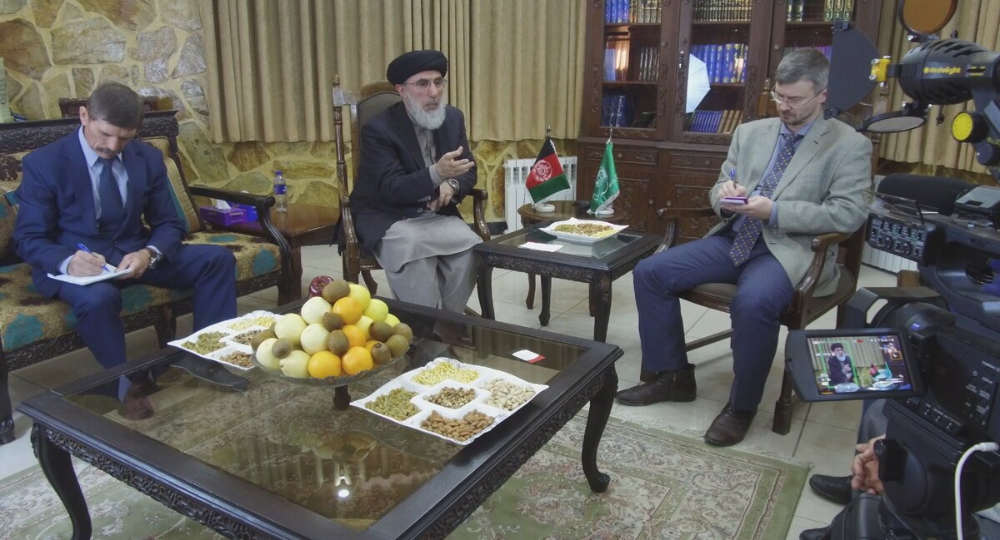«Из-за наших пленных чуть не случился вооружённый конфликт»
— Что ещё интересного рассказал вам Хекматияр о судьбе наших пленных?
— Прежде всего, мы узнали детали о малоизвестных побегах советских военнопленных из плена, которые, к сожалению, окончились трагически. Можно сказать, что это сенсация, нам удалось узнать удивительные подробности этой трагедии, что даёт надежду найти хотя бы их останки.
— То есть знаменитое восстание в пакистанском лагере Бадабер в апреле 1985 года, когда советские пленные дали бой моджахедам и героически погибли, было не единственным?
— Да. Но в отличие от событий в Бадабере, вокруг которых остаётся ещё много загадок, но по крайней мере известны основные участники этого без преувеличения героического восстания и общий ход событий, о двух других подвигах советских солдат в России неизвестно почти ничего, даже кратких упоминаний о них практически не встречается.
— Что именно вы узнали?
— То, про которое известно чуть больше, произошло в пакистанском лагере Пара-Чинар летом 1986 года. Если в Бадабере командовал другой лидер оппозиции Бурхануддин Раббани, то здесь была база Хекматияра. Собственно, с его ведома об этом инциденте нам после встречи довольно подробно, в письменном виде рассказал его сын.
По его словам, отец во время инспекции лагеря узнал, что советских военнопленных держат поодиночке, и распорядился выводить их на совместные прогулки, даже разрешил им играть в волейбол. То есть из этого мы можем предположить, что содержали их в замкнутом пространстве, видимо, в каких-то ямах.
Свидетелей, к сожалению, нет, и достоверно никто ничего не знает. Однажды вечером, когда охрана ушла на вечернюю молитву, они воспользовались этим, напали на единственного оставшегося с ними охранника — сын Хекматияра отмечает, что впоследствии он умер — и сбежали из лагеря.
— Сколько их было?
— Семеро, все наши, афганцев среди них не было. Завладев оружием охранника и примерно понимая, где граница с Афганистаном, они направились в том направлении. Смогли перейти её, шли в общей сложности около суток. Их поймали, когда оставалось чуть-чуть до выносного поста афганских правительственных войск, наших союзников. Ребята, видимо, знали о нём. Их захватила другая группировка, которая конфликтовала с ИПА Хекматияра. Как я понимаю, их взяли без боя. А вскоре туда прибыла погоня из Пара-Чинара.
— Получается своеобразный треугольник, где все стороны противостоят друг другу.
— Да, в этом описании говорится, что из-за наших пленных там чуть не случился вооружённый конфликт. Только благодаря привлечению местных старейшин с двух сторон удалось избежать прямого столкновения. Так получилось, что незадолго до этого от советского авиаудара в том кишлаке, где всё это произошло, погибли молодожёны и часть их родственников.
С учётом этого и чтобы избежать междоусобицы, старейшины решили, что наши пленные не должны доставаться ни тем, ни другим. Как пишет сын Хекматияра, их решили принести в качестве такой очистительной жертвы. Они были казнены.
— Вам известно точное место, где это произошло?
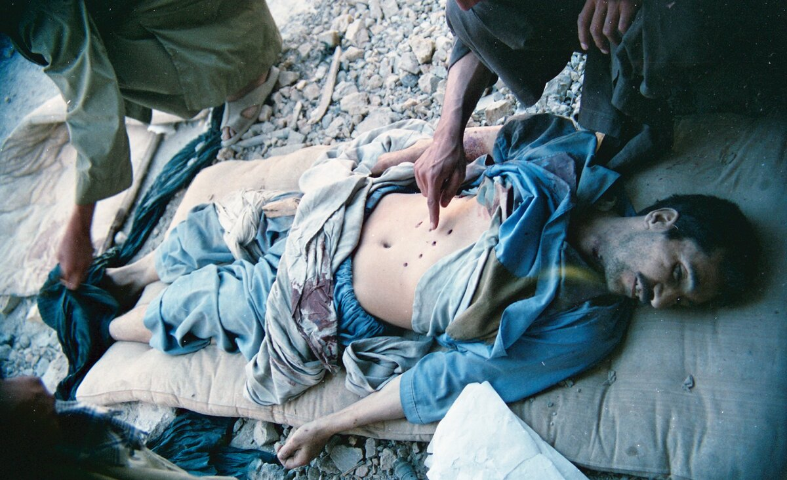— Да, у нас есть название кишлака, есть имена людей, к которым они тогда попали. Можно туда поехать и с большой вероятностью найти свидетелей этого расстрела. Но озвучивать точные данные я бы пока не хотел, это может только помешать нашим дальнейшим действиям.
— А есть ли реальная возможность туда добраться? Судя по карте, этот кишлак должен находиться в провинции Хост, а она и во время войны считалась весьма труднодоступной. Сам город Хост много лет был в блокаде и сейчас, с учётом фактора талибов, у которых Лаврентьев недавно побывал в плену, попасть в приграничные районы со стороны Афганистана, наверное, очень сложно.
— Да, нам самим доехать туда будет слишком дорого и рискованно, но с помощью посредников, надеюсь, мы сможем связаться с людьми, которые знают подробности страшной гибели наших ребят. Другой вариант — попросить лояльных к России афганцев нам помочь, естественно, не бесплатно. Такие проверенные люди у нас есть, они могут туда доехать, собрать информацию на месте, чтобы уже потом мы решали, как быть дальше. В идеале, конечно, если удастся, найти какие-то останки, чтобы после молекулярных исследований мы смогли установить личности погибших, о которых у нас пока никаких данных нет.
Убийца 14 советских пленных просил никогда не упоминать его имени
— Что вы узнали о втором восстании, о котором информации пока ещё меньше?
— Оно также произошло в 1986 году. В той группе было 14 наших пленных. Здесь я не хочу даже примерно говорить о географии. Мы узнали об этих событиях от человека, который тогда отвечал за безопасность этого лагеря.
Он просил никогда и нигде не упоминать его имя, потому что не скрывает, что в итоге ему самому пришлось убить наших солдат. Поэтому, может, это и прозвучит странно, мы сейчас должны быть осторожны, чтобы не поставить его жизнь под угрозу.
— Известно, как развивались события?
— Ближе к ночи они каким-то образом смогли быстро покинуть территорию лагеря, где их держали. Но в итоге к утру моджахеды всех поймали. Так как в памяти были ещё свежи события в Бадабере, которые нанесли им огромный урон, то они понимали, что за недосмотр у охраны лагеря могут быть проблемы. И чтобы о факте побега никто не узнал, этот начальник охраны без согласования со своим руководством принял решение всех советских пленников расстрелять.
— Нет слов. Каковы шансы туда добраться и найти останки?
— Перед тем как что-то делать, сначала надо договариваться. Как только коронавирус отступит и возобновятся авиаперелёты, можно будет попытаться встретиться с этим человеком или его представителем, возможно, даже в третьей стране. Это наша ниточка, конкретное место захоронения знает только он. Будем стараться прийти к компромиссу, но и здесь всё будет упираться в деньги.
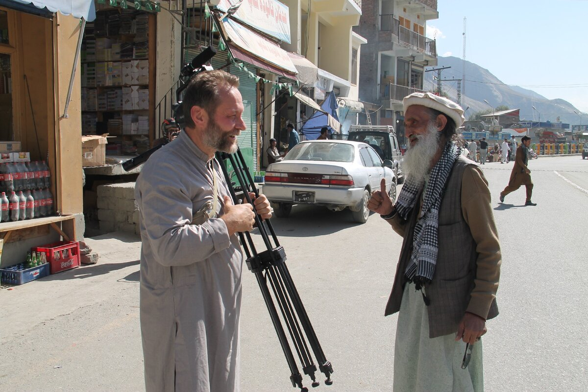Евгений Барханов
От «красного тюльпана» до эмиграции на Запад
— Судьба попавших в плен советских солдат складывалась по-разному. Разбираясь в этой теме, узнал, что около двух десятков наших пленных, которых моджахеды переправили в Пакистан, в итоге попали в США, Канаду, Европу, остались там навсегда. Их освобождал Красный Крест или порой буквально выкупали из плена западные правозащитники. Больше всего в этом отношении известна американка русского происхождения Людмила Торн. Как вы относитесь к этой категории пленных?
— Не нам их судить. В работе с военнопленным это второе правило после «не навреди». И если на кону стояла человеческая жизнь, то, конечно, лучше уехать насовсем туда, начав жизнь с нуля, чем остаться навсегда в афганской земле.
Поэтому я не скажу ничего плохого ни про Людмилу Торн, ни про других правозащитников. Да, их работа имела определённый идеологический окрас, после освобождения ребята делали публичные политические выступления, обращались к Рейгану, играли на той стороне, грубо говоря, но, как мне кажется, сами эти женщины спасали наших ребят из плена по велению своего сердца, а наши люди ехали туда добровольно.
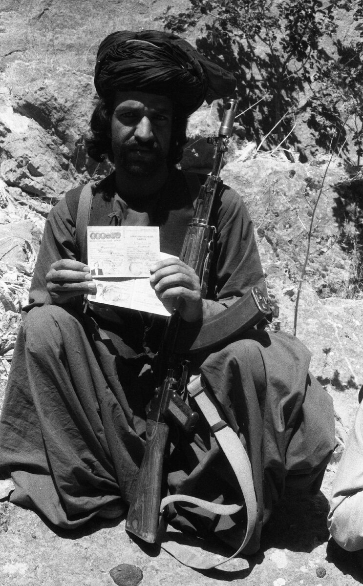
— Был такой момент, когда группа наших пленных попала из
Афганистана сначала в Пакистан, а оттуда Красный Крест отправил их
в Швейцарию. И только через два года часть из них вернулась в
СССР. Что это за история?
— Это было в 1982 году. СССР требовал у Красного Креста, чтобы солдат, освобождённых благодаря усилиям этой организации, сразу вернули на родину. Западные правозащитники воспротивились. В итоге нашли компромисс. Договорились, что после двухлетней «отсидки» под надзором в нейтральной Швейцарии их отправят в СССР. Но ближе к окончанию срока правозащитники снова начали заявлять, что отправлять принудительно людей нельзя. Добились, чтобы им дали возможность выбирать самим. В итоге из 11 человек восемь вернулись домой, а остальные попросили политического убежища: один буквально сбежал в Германию, двое остались в Швейцарии и затем, вроде бы, попали в США.
— От чего зависела судьба советского солдата в плену? Есть мнение, что в первые годы войны шансов выжить у них было меньше и только потом моджахеды поняли, что пленные «шурави» — это ценный актив. Так ли это?
— Каждый случай был уникален, всегда важны нюансы, потому что у нас там ведь и противника однородного не было — мы сражались с самыми разными группировками мятежников. Но какие-то общие тенденции действительно были. Если человека брали в плен в бою, в котором кто-то из моджахедов погиб, или если в этой группе есть «кровники», у кого кто-то погиб раньше, то шансов уцелеть почти не было.
Нашему военнослужащему Виктору Грязнову решением шариатского суда в феврале 1981 года сделали «красный тюльпан». Это чудовищная средневековая казнь, даже от описания которой становится жутко, кому очень интересно, наверное, смогут найти в интернете про это.
Во многом такая расправа использовалась в пропагандистских целях. Плюс тут был и элемент жертвоприношения, когда человек переживает эти предсмертные муки страшные. Таких казнённых подкидывали, и без вести пропавшими они не считаются — их, как правило, опознавали.
И для нас, солдат, такие случаи тоже были своеобразной агитацией. Тела погибших для наглядности порой показывали личному составу, чтобы люди даже в какой-то сложной для себя ситуации старались избежать плена.
— Как я понимаю, довольно много ребят было вызволено ещё в ходе самой войны. Кто и как тогда занимался поисками пропавших без вести?
— К 1982 году их количество было уже значительным и в контрразведке 40-й армии появился специальный отдел, который эти поиски централизовал. Люди же пропадали в самых разных провинциях, из разных подразделений, и нужна была общая координация. Использовались разные методы для поиска — где-то с помощью денег решали, порой обменивали на их пленных, по-разному. Для любого командира пропажа солдата — это ЧП, и в каждом случае предпринимались серьёзные усилия, чтобы найти его.
— Многие пропавшие без вести, как потом выяснялось, просто сбегали из частей из-за дедовщины — издевательства были настолько невыносимы, что люди, несмотря на все страшилки, были готовы бежать куда глаза глядят. Мне всегда казалось, что понятия войны и дедовщины очень плохо уживаются друг с другом.
— Дедовщина в Афганистане действительно была, как, впрочем, и во всей советской армии, но всё зависело от конкретного командира и были части, где этого не было. Я бы отметил негативную роль, которую сыграли наркотики. В силу их легкодоступности эта проблема была повсеместной. И очень много инцидентов, в том числе и в плане неуставных отношений, связаны именно с наркотой.
Тем более бытовые условия, особенно в первые годы пребывания, были очень плохими. Я был там уже под конец кампании, но бывало просыпался под снегом, за ночь просто засыпало. В горах не мылись нормально по полтора месяца. Самое тяжёлое на войне — быт. И многие морально не выдерживали, тем более когда приходилось обеспечивать бытовой комфорт не только себе, но и старослужащим. Сложно было. Ну и сами боевые действия, конечно, расшатывали психику у многих.
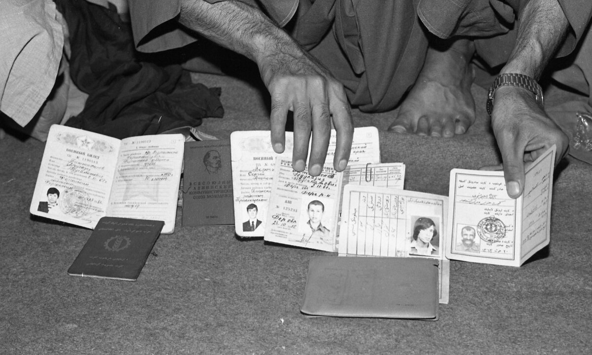Открытые архивы ЦРУ
— В «Ташакоре» есть уникальные документальные кадры. Ещё больше интересных и ранее не публиковавшихся архивных видео- и аудиоинтервью с нашими пленными в Афганистане есть на вашем YouTube-канале. Откуда эти материалы?
— Из не так давно официально опубликованных архивов ЦРУ. В США есть правило: по истечении 30 лет происходит первый этап отсеивания документации на предмет того, представляет ли она какой-то оперативный интерес для их спецслужб или нет. То, что уже не актуально, — публикуется. Понятно, что это далеко не всё, что у них есть, но и это серьёзное подспорье. Если бы не это правило, эти интереснейшие материалы ещё долго пылились бы в архивах. Их изучение обязательно принесёт свои плоды.
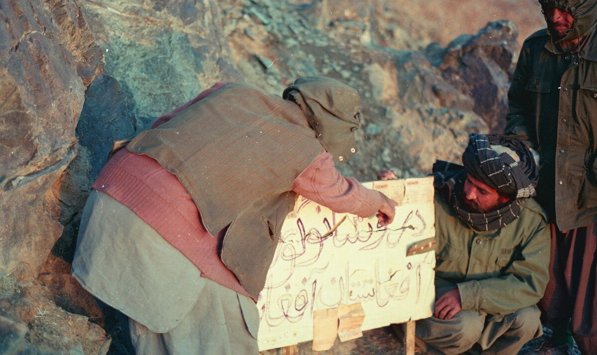— Насколько там большой массив информации по Афганистану?
— Одних видеоматериалов я уже отобрал порядка 50 часов, но я пока далеко не всё просмотрел и изучил. Теперь надо их детально, как через сито, просеивать и искать что-то интересное для нашей миссии. А интересного там очень много. А есть же ещё фото, аудио, письменные материалы. Часто не понимаешь, кто это, что это, обращаешься к кому-то за помощью. Именно поэтому я очень много чего выкладываю в своих соцсетях и на своём YouTube-канале.
Очень хочется, чтобы кто-то из читателей помог опознать человека или рассказать какие-то неизвестные подробности о пропавшем сослуживце. И это работает, я получаю от аудитории очень важные сведения. К примеру, после публикации одной фотографии тела погибшего советского солдата, пропавшего в 1980 году, мне написал автор этого снимка. Он дал всю информацию, и мы постараемся туда добраться, чтобы попробовать найти его останки.
— А что насчёт советских архивных документов?
— В СССР армейская отчётность, чего скрывать, помимо приписок, порой содержала ещё и элемент прямого искажения. Достоверно судить об обстоятельствах пропажи наших военнослужащих по официальным документам — выпискам, приказам, объяснительным начальства или сослуживцев — можно не всегда. Пытались всегда какие-то неприглядные моменты, даже ценой их искажения, сгладить и представить ситуацию в более выгодном свете. Никто же не будет никогда прямо писать, что старослужащие отправили новичка в кишлак за наркотой и его там пленили. Это не нужно было ни солдатам, ни командирам.
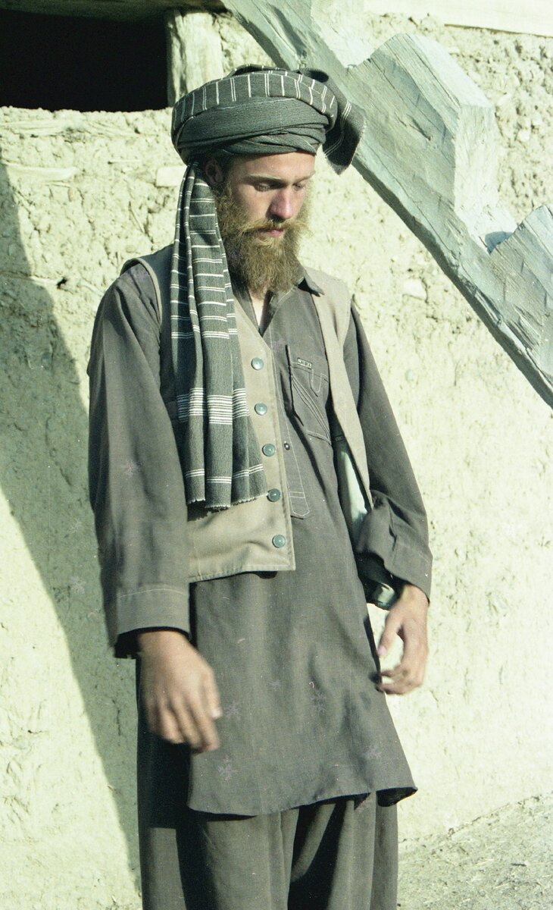— Есть ещё какие-то примеры такого подхода?
— Да, есть реальная история, она войдёт в мой следующий документальный фильм «Ташакор, послесловие...», который я планирую закончить до конца года. Сбили вертолёт. Три члена экипажа погибли, гробы с телами отправили домой. А через какое-то время приходит агент и говорит, что у нас есть лётчик, которого недавно сбили. Он сильно ранен, его лечат. Стали разбираться, что это за лётчик.
Оказалось, на месте падения удалось достать только два трупа, а третий так и не нашли. Но для того чтобы его семье выплачивались все положенные льготы, командование решило оформить его как погибшего. В гроб положили и отправили родным какой-то небольшой кусок человеческой плоти, найденный на месте падения и принадлежавший, видимо, этому самому лётчику. А его самого тем временем вылечили и переправили в Пакистан. В итоге было упущено драгоценное время для поисков, ведь он с самого начала числился погибшим. Как сложилась его судьба в итоге, мы не знаем.
— Его личность известна?
— Да, но фамилию я специально не называю, потому что он здесь по всем бумагам остаётся погибшим. И когда ты собираешь всё это по крупицам, то понимаешь, что нельзя ничего однозначно утверждать. Были случаи, когда после гибели лётчиков в плену, а из-за бомбёжек их ненавидели больше всех, душманы отдавали уже буквально какие-то фрагменты тел, но никто же не делал тогда никаких анализов. Был ли это тот самый лётчик или кто-то другой — неизвестно. И таких случаев достаточно.
«Я составил целый список имён тех, кто бывал в стане моджахедов»
— Какие ещё источники информации использовали для работы над картиной? Есть среди них те, что могут помочь с поисками пропавших?
— Да, хотя, к сожалению, некоторые очень интересные для нас люди не хотят идти на контакт. Очень продуктивно пообщались с французским журналистом русского происхождения Виктором Лупаном, который неоднократно бывал в стане моджахедов и поделился имеющимися у него уникальными материалами. Общались со знаменитым художником Михаилом Шемякиным, который тоже активно помогал освобождать наших пленных. Очень многообещающим выглядит знакомство с американским журналистом, фотографом, режиссёром и писателем Джеффом Хармоном, которого мы нашли в Лос-Анджелесе.
— Что в его творчестве вас так привлекло?
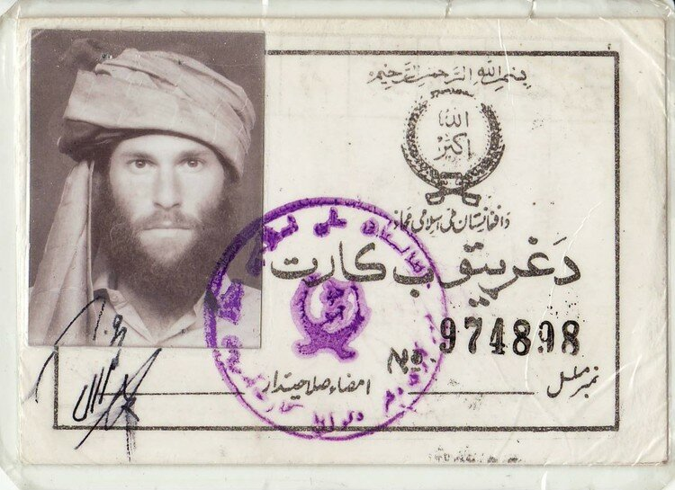— Хармон очень незаурядный человек, настоящий сорвиголова и искатель приключений. У него за плечами множество военных конфликтов в разных уголках планеты, в том числе, и это уникальный случай, он смог поработать в Афганистане с двух сторон — сначала в лагерях моджахедов, где у него есть действительно уникальные и очень интересные для нас кадры, а затем, уже в эпоху гласности, ему дали возможность понаблюдать за работой нашего спецназа.
Он хочет сотрудничать с нами, его очень интересует тема художественного фильма об Афганистане, который я планирую снять. Он хочет активно в нём участвовать. Тема наших пленных сама по себе его интересует меньше, но, чтобы поддержать наладившийся контакт, он нам с ходу назвал точное место, где он лично снимал ранее неизвестное место захоронения 12 пленных. На его кадрах, которые я вставил в «Ташакор», видно, как из земли торчит нога в китайских кедах. В то время в Афганистане их просто не было, это наш боец.
Моджахеды сказали ему, что там 11 «шурави», то есть советских солдат и — неожиданно — один кубинец. Кто в их понимании кубинец, сказать трудно.
— Он рассказал ещё какие-то подробности?
— На момент его пребывания в том отряде захоронение было совсем свежим. А на вопрос, не осталось ли живых «шурави», командир отряда с досадой ответил, что если бы он пришёл чуть раньше, то ему бы их показали. Главарь сказал, что остался один, который молчит, и после того, как тот заговорит, его обезглавят. И показали Хармону вот этого человека в цепях, которого мы поместили на постер фильма.
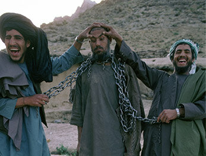— Да, это одна из самых жутких и в то же время завораживающих сцен вашей картины, даже не верится, что это документальные кадры. Известно, кем был этот человек?
— Мы точно не знаем, кто он. На записи моджахеды говорят, что он советский, но, как говорит Хармон, ему показалось, что это скорее был афганец. В итоге ему отрубили голову.
Думаю, он снял эту сцену, но и в свой документальный фильм (а он снял три картины по Афганистану) эту сцену не вставил, и нам не дал. Надеюсь, дальнейшее знакомство с ним даст нам больше информации. Вообще, я составил целый список имён, разбросанных по всему миру, кто бывал в стане моджахедов и кто мог видеть там наших пленных. В основном творческая интеллигенция.
«Итальянец хотел снять постановочный кадр с захваченным танком, но тот его задавил»
— Как я понимаю, среди моджахедов, которых Запад щедро снабжал оружием и деньгами, воевали и отдельные представители этих стран?
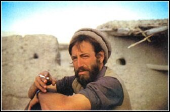— Да, французы им очень активно помогали, было много врачей. Есть данные, что печально известный ПЗРК «Стингер» зачастую применяли в бою люди с европейской внешностью. По одной из версий, самолёт того же Пантелюка в 1987 году был сбит именно французом. У меня есть видео, где слышна французская или английская речь. Я знаю об австралийце, японце — мастере боевых искусств, естественно, арабы и американцы. Был интересный итальянец Раффаэле Фаверо, который в итоге принял ислам и взял в руки оружие. Он погиб в 1983 году, пытаясь снять постановочный кадр в отряде моджахедов. Те захватили танк, возможно, афганский, и решили снять красивый проезд, посадив на броню «духов». А за рычаги, предположительно, посадили одного из наших пленных, так, во всяком случае, утверждала сестра Фаверо. Однако что-то пошло не так, и танк раздавил его с камерой в руках. Мне в руки попала видеозапись этого инцидента, это уникальный материал, но даже по ней трудно сказать, был ли этот наезд умышленным. Кем был этот механик-водитель танка, доподлинно неизвестно, на записи у него азиатский тип лица. Возможно, это афганец, но, возможно, и наш. К сожалению, после наезда его немедленно казнили.
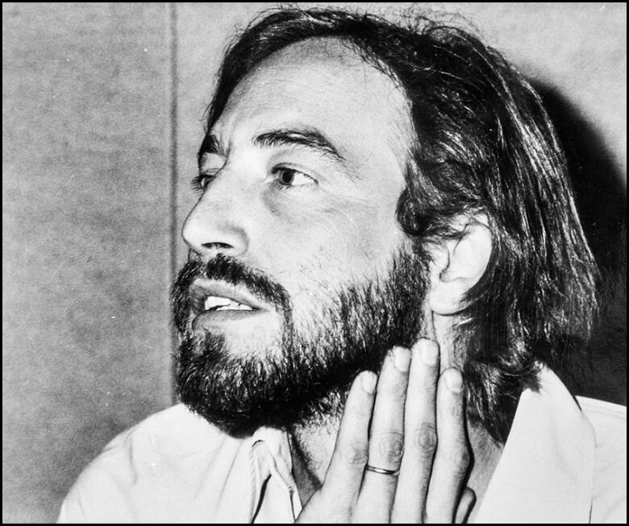«Советские военнопленные стали камнем преткновения»
— Много лет не угасают споры о необходимости ввода наших войск в Афганистан. Что об этом думаете вы?
— Я, наверное, не буду слишком оригинален, если скажу, что вводить войска было ошибкой, но ещё большей ошибкой было выводить их так, как это было сделано. Ведь в соглашении о поэтапном выводе войск из Афганистана, подписанном в 1988 году в Женеве, вообще никак не была обозначена проблема пропавших без вести, а это же сотни наших ребят.
— Почему так произошло?
— Тут целый комплекс причин, но если кратко, то военнопленные для участников соглашения, прежде всего, конечно, для моджахедов и Запада, были камнем преткновения. Тогда никто не знал, что СССР осталось жить несколько лет, поэтому, когда наши оппоненты тщательно обходили этот момент, мы, чтобы подписать документ, были вынуждены согласиться с этим. Мне кажется, Горбачёву тема наших пленных тоже была не очень удобна, ведь там могли всплыть не только удивительные истории патриотизма, но и очень много всего неприглядного. В итоге получилось, что их как бы и нет. Кроме родителей и уже упомянутых Востротина и Аушева их судьбы мало кого волновали.
— Как афганцы сейчас относятся к США, чья операция длится в два раза дольше советской и всё никак не закончится?
— Америка туда вложила колоссальные деньги. Мы больше помогали стройками, специалистами, оружием, а они больше финансами. Крупные провинциальные центры по сравнению с 1980-ми сильно изменились в лучшую сторону. Да, афганцы порой обижаются на русских, но американцев ненавидят намного сильнее, с их стороны было много террора. Они вынуждены жить за шестиметровым забором на своих неприступных базах. То есть, с одной стороны, больших политических результатов они не достигли, а с другой — какой-то относительный мир на данный момент в стране установился.
* «Талибан» — организация признана террористической по решению Верховного суда РФ от 14.02.2003.
Ссылка на публикацию: